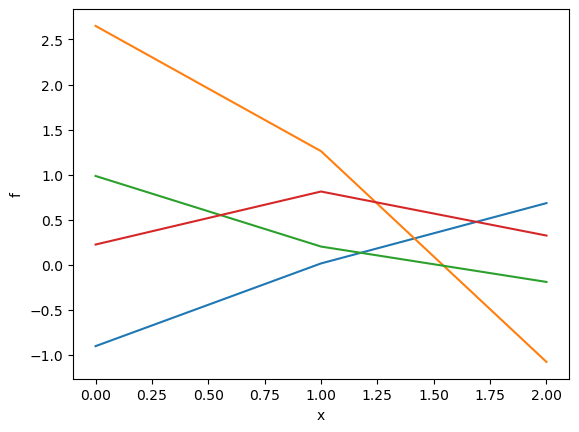
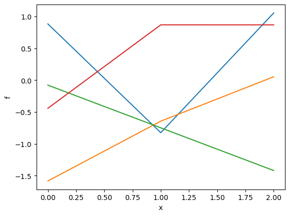
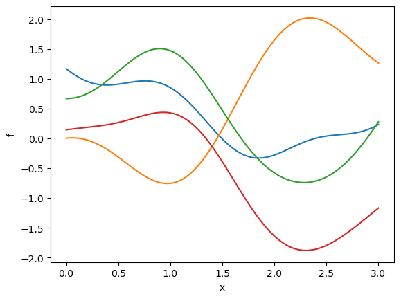
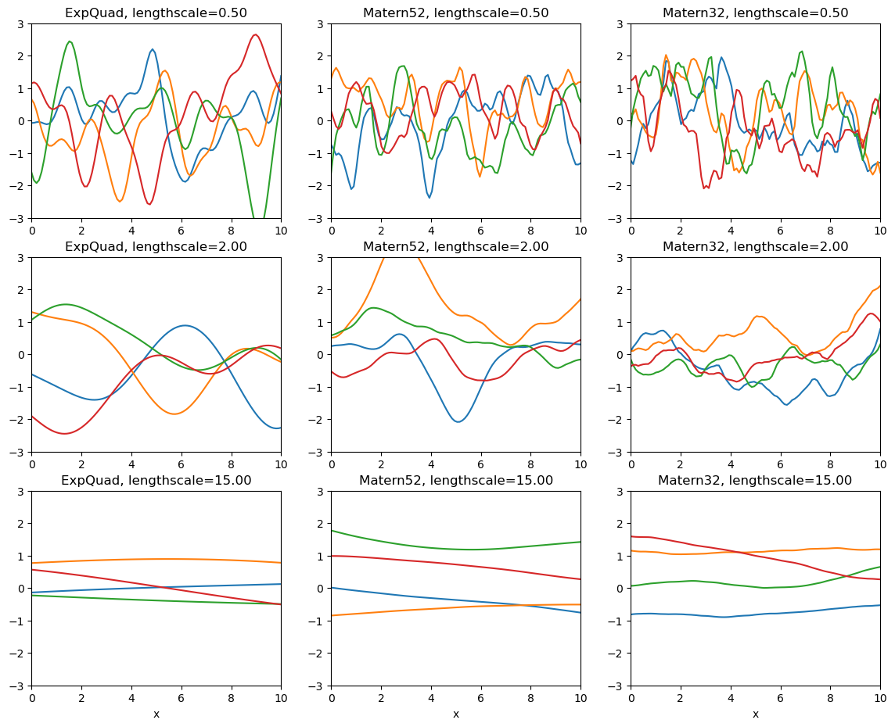

import numpy as np
import matplotlib.pyplot as plt
import pymc as pm
import arviz as az
import pytensor.tensor as pt
import patsy as ptTODO
- remove TVP mentions
- rewrite
- Last section, dont introduce other covariances, just play with the lengthscale
- switch to talking about correlation, so we dont need amplitude. MAYBE
GP Overview
Gaussian processes are a technique for fitting curves and then making forecasts. They can serve a similar purpose as polynomials or splines – but unlike polynomials or splines, they also can be used for forecasting, like autoregressive and random walk models. GPs are very general. Splines, polynomials, autoregressive and random walk models can all be expressed as a GP. Another advantage is Gaussian processes scale well with input dimension. For instance, a time series is one-dimensional, and a spatial process is 2D. A spatially varying process that also depends on 3 other covariates is 5D. GPs can handle this easily, with full interactions between the dimensions.
The catch is that they scale very poorly with the number of data points, \(n\), both for fitting and prediction. Their computational complexity is \(\mathcal{O}(n^3)\). The game with using GPs in practice is using approximations to GPs. I think this is what scares most people away from using them more extensively. There are many different approximations, but each one is designed to work well in specific situations. The Hilbert space Gaussian process approximation (HSGP) works great for one or two dimensional inputs, so a time series or a spatial process, and with covariance functions that are stationary. The most useful stationary covariance functions are those in are in the Matern family, so pm.gp.cov.ExpQuad, pm.gp.cov.Matern52, pm.gp.cov.Matern32. Computationally, HSGPs scale with data set size \(n\) more like spline models, so they are very fast to fit. They were intended to be used within probablistic programming languages, like PyMC and Stan, because one or two dimensional Matern GPs are really useful as components in larger models.
(HS)GPs are a good fit for TVPs because unlike splines or polynomials you can forecast with them, and unlike AR processes or random walks, they are generally smoother and it’s much easier to include prior information about how we think the TVPs behave. The restrictions that HSGPs carry aren’t an issue for making TVPs in an MMM model. We’ll just stick to one dimensional examples here, because that’s what you need for a TVP.
What is a GP?
You’re probably used to the idea of putting a prior on some unknown parameter. At the simplest level, a Gaussian process is a multivariate normal (Gaussian) prior on some unknown vector. That’s the “G” in the “GP”. The process part, the “P”, is that you have to use a covariance function, instead of a covariance matrix. Here’s the difference between a covariance matrix and a covariance function in a context where you have \(n=3\) data points. This would be analogous to modeling a TVP over three days.
Covariance matrix
Say you have a length 3 vector that you don’t know, call it f. This could be one of the parameters in the Tanh or Michaelis-Menten saturation function. One option is to put three independent normal priors on each element of \(f\). This wont work very well though, because we know that the values of f are not independent, because they probably change somewhat slowly over time. Instead, we can put a multivariate normal prior on it to account for the lack of independence. The multivariate normal distribution is parameterized by a mean vector and a covariance matrix. We always assume the mean vector equals zero and forget about it. For a length 3 vector, the covariance matrix will be 3-by-3, and each element gives the covariance between the \(i\)th and \(j\)th element of the vector f.
Before we can use our multivariate normal prior in a model, we need to choose the values of the covariance matrix. Say you think, a-priori, that there is a pretty strong relationship between successive elements, as one would for a TVP. If it equals a particular value on Tuesday, it’s probably going to be at a similar value on Wednesday. It could change drastically, but it’s more likely that it won’t. Other than that they are positive, you may not know much about the actual values per se, just that if f[0] is high, then f[1] is probably high, too. Also if you think f[1] is low, then f[2] is probably also low. This is just positive correlation. It’s also reasonable to think a-priori that there’s two-step correlation, so that if f[0] is high then so is f[2], but that the two-step correlation is not as strong as the one-step correlation.
The prior below expresses this for the particular choices of 0.7 for the one-step correlation and 0.1 for the two step correlation. We can then draw 4 samples from this prior below.
covariance_matrix = np.array([
[1.0, 0.7, 0.1],
[0.7, 1.0, 0.7],
[0.1, 0.7, 1.0],
])
x = np.arange(3)
samples = pm.draw(pm.MvNormal.dist(mu=np.zeros(3), cov=covariance_matrix), 4).T
plt.plot(x, samples);
plt.xlabel("x"); plt.ylabel("f");
You could code this up in PyMC and it would work great. There are some clear drawbacks though:
- This is tedious. If you had a vector of length 10, it’d be difficult to decide on your a-priori assumptions on what all the covariance values should be. Or if you had a vector of length 1000.
- There’s no mechanism to forecast the TVP past the observed days. How would you get the 4th point? The only way to do it is to assume that the one and two-step correlations you chose held true. What about three-step correlation? We need that now, and we’d have to make up a new number for it. The assumption is kind of sketchy. It’d be far better to use the actual data to determine this somehow. We’ll return to this later when talking about the lengthscale parameter.
These two issues lead us to covariance functions.
Covariance function
A covariance function takes in two arbitrary x-locations, we’ll call them \(x\) and \(x'\), so it knows how far apart each element in the vector is, and given those two x-locations it then returns the covariance value that f should have between these two locations. To make a covariance matrix, we have to iterate over all possible combinations of \(x\) to calculate all the pairs (maybe you’re starting to see why GPs are so slow). Our example covariance function is: \[
k(x, x') = \exp\left( -(x - x')^2 \right)
\]
- \((x - x')^2\) is the squared “distance” between the two x-locations.
- Taking the negative and exponentiating the distance makes it so that small distances go to 1, and large distances go to 0.
We can pass in any \(x\) to our covariance function and get a covariance matrix. Passing over the actual math, this is the groundwork that we need to use multivariate normals for forecasting, the “process” part of Gaussian process.
def covariance_function(x, x_prime):
dist = np.square(x - x_prime)
return np.exp(-1 * dist)
K = np.empty((3, 3))
for i in range(3):
for j in range(3):
K[i, j] = covariance_function(x[i], x[j])
samples = pm.draw(pm.MvNormal.dist(mu=np.zeros(3), cov=K), 4).T
plt.plot(x, samples);
plt.xlabel("x"); plt.ylabel("f");
print(K)[[1. 0.36787944 0.01831564]
[0.36787944 1. 0.36787944]
[0.01831564 0.36787944 1. ]]The covariance matrix that come out of the covariance function is pretty similar to the first one that we made up. It contains the same idea, that successive elements of f are more correlated than elements that are further apart. Since we wrote a covariance function, let’s pass in a much larger vector x, 100 points equally spaced between \(x=0\) and \(x=3\), and see what our prior samples look like now.
n = 100
x = np.linspace(0, 3, n)
def covariance_function(x, x_prime):
dist = np.square(x - x_prime)
return np.exp(-1 * dist)
K = np.empty((n, n))
for i in range(n):
for j in range(n):
K[i, j] = covariance_function(x[i], x[j])
samples = pm.draw(pm.MvNormal.dist(mu=np.zeros(n), cov=K), 4).T
plt.plot(x, samples);
plt.xlabel("x"); plt.ylabel("f");
Our original x was three elements long, and our new x is 100 elements long, both going from 0 to 3, but this one has a much higher resolution. This leads to prior samples of f that also have a much higher resolution. This gives us an entirely new way to think about functions, via the correlation between successive elements, instead of trying to construct them from existing functions like lines, polynomials, or sine waves. When designing priors for GPs, you think about how closeness between different pairs \(x\) and \(x'\) points manifests in closeness of \(f(x)\) and \(f(x')\). It seems strange at first, but I think it’s a much more natural way to think about putting priors on unknown functions. TVPs in an MMM definitely don’t really follow sine or polynomial patterns, but a value for a particular day really is more related to the value on nearby days. By thinking more carefully about that relation, we can include more prior knowledge about the TVP into the model that will improve it’s results.
The lengthscale parameter
There’s one more very important piece missing. Our covariance function currently has a fixed sense of nearness between pairs of \(x\) values. Let’s change that by introducing a parameter called the lengthscale. Then, we replace the distance, \((x - x)^2\) with \(\left(\frac{x - x'}{\ell} \right)^2\). The lengthscale \(\ell\) directly scales the distance between the pair of \(x\) values. Our new covariance function is
\[
k(x, x') = \exp\left( -\frac{(x - x')^2}{\ell^2} \right) \,.
\] The Python code for it is below.
def covariance_function(x, x_prime, ell):
dist = np.square(x - x_prime) / np.square(ell)
return np.exp(-1 * dist)For instance, if \(x = 0\) and \(x' = 10\), then a lengthscale of \(\ell = 100\) gives,
covariance_function(x=0, x_prime=10, ell=100)0.9900498337491681which is nearly equal to one. This means that, in the context of \(\ell = 100\), 0 and 10 are actually very close together. Now, say the lengthscale \(\ell = 0.5\). That gives,
covariance_function(x=0, x_prime=10, ell=0.5)1.9151695967140057e-174which is very nearly equal to zero. An analogy might be, San Diego and LA are very far apart – if you’re walking. That’s like having a small lengthscale. San Diego and LA are really close if you’re flying, a large lengtscale. They’re so close it doesn’t make sense to fly. If you’re driving, that’s like having a lengthscale somewhere in the middle. With a lengthscale of 5, we get,
covariance_function(x=0, x_prime=10, ell=10.0)0.3678794411714424Which is a number thats more nicely in the middle between zero and one.
Instead of choosing a value of the lengthscale a-priori, you can put a prior on it and learn it from the data. The lengthscale is, by far, the most important parametern to consider when you’re working with GPs. It’s also a very interpretable parameter. It tells you how far correlations between neighboring \(x\) values reach.
More importantly, the lengthscale also tells you have far into the future you can make reliable forecasts. For instance, say \(x\) is measured in days. If we were to estimate that the lengthscale is somewhere around 5, that tells us that the relationship between neighboring \(x\) values only matters when they’re about 5 days apart. That means that we can probably say something about a forecast 5 days into the future, but beyond that we will have no idea.
Drawing from the GP prior
There are three degrees of freedom when setting up a GP prior: 1. Choice of kernel or covariance function (kernel or covariance function mean essentially the same thing). One of pm.gp.cov.ExpQuad, pm.gp.cov.Matern52, pm.gp.cov.Matern32. There are many, many different but these three are very useful and are implemented to work with the HSGP approximation. This choice determines how “smooth” the GP is. 2. Choice of lengthscale prior. I usually call it ell, because it has three letters like eta so the code lines up and the Latex command for scripty \(\ell\) is “”. This parameter controls how “wiggly” the GP is.
3. Choice of the scale, or amplitude prior. I usually call it eta, which seems to be the convention in Stan. Since a GP is fancy multivariate normal distribution, the scale parameter is called \(\eta\) because it’s interpretation is exactly like a standard deviation parameter. I haven’t mentioned it so far because it’s the simplest parameter to understand. It controls whether the GP ranges from -1 to 1, or -100 to 100, or any other scale.
You choose the covariance function, and then set priors on eta and ell. You’ll notice I’m using the words “smoothness” and “wigglyness” as distinct concepts even though they mean the same thing, but hopefully it’s clear why is in a moment. Here I’m also going to switch to the PyMC implementations of the covariance functions. They’re vectorized so we don’t need to use two for loops to evaluate them over the inputs \(x\). The plot below is nine panels, each row is one of the 3 common covariance functions, and each column is a different lengthscale. We’ll use the same vector of x values between 0 and 10 that we used before.
fig, axs = plt.subplots(3, 3, figsize=(14, 11))
x = np.linspace(0, 10, 100)
cov_funcs = [
pm.gp.cov.ExpQuad,
pm.gp.cov.Matern52,
pm.gp.cov.Matern32,
]
lengthscales = [0.5, 2.0, 15.0]
for i in range(3):
for j in range(3):
ell = lengthscales[i]
cov_func = cov_funcs[j](input_dim=1, ls=ell)
K = cov_func(x[:, None])
samples = pm.draw(pm.MvNormal.dist(mu=np.zeros(len(x)), cov=K), 4).T
axs[i, j].plot(x, samples)
axs[i, j].set_ylim([-3, 3])
axs[i, j].set_xlim([0, 10])
axs[i, j].set_title(f"{cov_funcs[j].__name__}, lengthscale={ell:.2f}")
if i == 2:
axs[i, j].set_xlabel("x");
All the samples in each row are the same amount of “wiggly” (not a technical term), and all the samples in each column are the same amount of “smooth” (a bit more of a technical term). The interpretation of the lengthscale is the same for each covariance function. Our example covariance function we made from scratch is called the “exponentiated quadratic” (kind of a mouthful). It’s implemented in PyMC as pm.gp.cov.ExpQuad. There are many different covariance functions implemented in PyMC. We’ll stick to these three though, since we need to use the HSGP approximation to implement TVPs and it only is built to work with these three (for now). Covariance functions are also called kernels in other contexts. For example, these are the same kernels used with support vector machines, where the exponentiated quadratic is the most common default choice (it’s usually called RBF).
In most applications, the best starting choice is the Matern52. It’s not as rough and choppy as the Matern32, and it’s not as smooth as ExpQuad. Most examples you’ll see in other places use ExpQuad as the default kernel, I think mostly because it has a simple and easy to understand equation. However, it doesn’t make a good default choice because it’s too smooth. Sample functions drawn from exponentiated quadratic priors are actually infinitely differentiable, while samples from the two other Materns are not. Enforcing that the functions are infinitely differentiable is actually a very strong prior on the smoothness of the process you’re modeling, that may not line up with reality. Choosing the Matern52 and accepting small amounts of discontinuity is usually a much safer bet.
In a separate notebook I’ll write about how to fit a GP. This will cover the considerations to make when setting priors on the scale and lengthscale parameters, which is critical for getting good results with GPs.